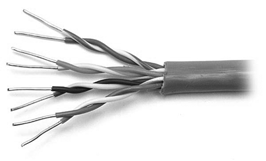
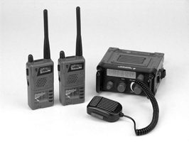

Aunque la existencia de un flujo de información en forma de bits codificados transmitidos por un medio físico se ha convertido, por sí mismo, un gran avance tecnológico, deben cumplirse ciertas condiciones. De hecho, estos condicionantes se fundamentan en la necesidad de proporcionar cierto orden y coherencia a la información que se transmite, por ejemplo, organizar la información en secuencias de datos con forma de trama.
La acción de envolver la información para transmitir en tramas se basa en la inclusión de un abanico de añadidos que ayudan a reafirmar los parámetros de seguridad y de integridad necesarios para la comunicación. Este abanico de añadidos proporciona información tan relevante como el reconocimiento de los errores aparecidos durante la comunicación, donde están situadas los datos dentro de la trama o bien cuáles son los dispositivos que se están comunicando.
La acción de envolver la información en forma de tramas se produce en la capa 2 del modelo de referencia OSI.
El concepto de trama como secuencia de información implica imaginar una larga cadena de dígitos en el que cada uno de estos dígitos tiene una función preestablecida. Cabe decir que estas funciones se asignan a grupos predefinidos de bytes dentro de la trama en secciones secuenciales llamadas campos (figura).
Para el correcto funcionamiento de la transmisión de los paquetes de información, cada uno de los campos que forman la trama tiene una función concreta que el ordenador emisor sabe cómo definir y que el receptor sabe cómo interpretar. Un cambio en el contenido de estos campos puede variar completamente la función final del paquete de información.
-
Campo de inicio de trama (A). Cuando los ordenadores están conectados a un medio físico necesitan un mecanismo que les ayude a difundir sus mensajes o, a grandes rasgos, avisar del envío de una trama. Es por ello que, tomando el símil de las banderas que hay en el frontal de un coche diplomático, todas las tramas tienen una secuencia inicial de bytes de señalización que avisa de su llegada.
-
Campo de dirección (B). Todas las tramas contienen información que permite identificarlas, como, por ejemplo, la dirección del ordenador que envía la información, esto es, la dirección MAC y la dirección MAC del ordenador de destino.
-
Campos de longitud y tipología (C). Las tramas tienen campos especializados con diferentes fines en función de la tecnología utilizada. Por ejemplo, este campo se puede utilizar para indicar qué protocolo de la capa 3 del modelo de referencia OSI ha utilizado o bien para especificar la longitud exacta de la trama.
-
Campo de datos (D). El principal motivo por el que se envían tramas es para obtener los datos de la capa superior, esto es, los datos de la aplicación del usuario y enviarlas de un ordenador a otro. Como si de una carta se tratara, dentro del sobre, en este caso el envoltorio que se ha convertido la trama, está el mensaje que se quiere enviar (los datos).
-
Campo de secuencia de verificación de trama (FCS, frame check sequence) (E). Considerando en qué grado son susceptibles a errores las tramas y los campos contenidos, es necesario establecer un parámetro que verifique la integridad de la trama. De hecho, el campo de secuencia de verificación de trama contiene un número que es el resultado de un cálculo realizado por el ordenador que envía la trama. Cuando el ordenador destinatario recibe la trama, vuelve a calcular el número FCS y lo compara con el número FCS insertado dentro de la trama. En caso de que ambos números no coincidan, se asume el error y la trama es descartada.
El esquema más sencillo para detectar errores se basa en la paridad, esto es, añadir un bit que indica si el número de bits de valor 1 en los datos que le preceden es par o impar.
Si un solo bit cambia por error durante la transmisión, el mensaje cambia de paridad y el error se puede detectar (siempre que el error no se produzca en el bit de paridad). Un valor de paridad de 1 indica que hay un número impar de unos dentro de los datos. Un valor de paridad 0 indica que hay un número par de unos dentro de los datos.
Tramas Ethernet IEEE 802.3
Es importante tratar el tipo de trama que hay en las redes Ethernet actuales, esto es, la trama básica Ethernet IEEE 802.3. A diferencia de una trama genérica, la trama básica Ethernet IEEE 802.3 presenta un número de campos distribuidos más elevado, en este caso, en bytes (figura).
Los diferentes campos que forman la trama básica Ethernet IEEE 802.3 tienen una misión definida por parte del ordenador emisor para que sean interpretados por el ordenador receptor. Cualquier cambio en el contenido de estos campos puede variar la interpretación correcta de la trama.
-
preámbulo. Con la intención de presentar todo tipo de compatibilidad, este campo contiene un patrón de siete bytes de longitud donde se alternan el 1 y el 0 para indicar el inicio de la trama.
-
Delimitador de trama de inicio (SFD). Este campo marca el punto final de la información de sincronización de tiempo.
-
Dirección de destino. Este campo contiene los seis octetos de la dirección MAC destino. En este caso, es importante destacar que hay tres tipos de direcciones, esto es, de unidifusión (para enviar un punto a otro punto), multidifusión (para enviar un punto a grupos de puntos) y, por último, dirección de difusión (de un punto a todos los demás).
-
Dirección de origen. Este campo contiene los seis octetos de la dirección MAC de origen.
-
Longitud / tipo. En caso de que el valor insertado sea menor que el valor decimal 1536, el valor se refiere a la longitud. En caso contrario, el valor especifica el protocolo de la capa superior que recibe los datos una vez que se haya completado el procesamiento Ethernet.
-
Datos y relleno. Este campo puede devenir de cualquier longitud que no provoque que la trama exceda su tamaño máximo. De hecho, la unidad máxima de transmisión (MTU, maximum unit transmision) Para la Ethernet es de 1.500 bytes, es decir, el tamaño que no pueden exceder los datos. De hecho, en caso de necesidad, se suele aplicar la técnica del relleno de bits (bit stuffing) cuando no hay suficientes datos del usuario para que la trama alcance su longitud máxima.
-
Secuencia de verificación (FCS, frame check sequence). Esta secuencia contiene el código de redundancia cíclica (CRC, cyclic redundancy check), Esto es, el valor resultante de un cálculo para la detección de errores en la trama realizado por parte del dispositivo emisor. Es en el momento de la recepción cuando el dispositivo receptor vuelve a hacer este cálculo de verificación para comprobar la integridad de la trama y la inexistencia de posibles errores. En caso de que el cálculo realizado coincida con el valor insertado en la trama, la trama sería aceptada. En caso contrario, el dispositivo receptor la rechazaría.
Poco relleno
Tomando el nombre de la acción de rellenar los osos de peluche (bear stuffing), la técnica del bit stuffing se fundamenta en la inserción de bits que no contienen (ni en su conjunto forman) ninguna información para que el campo de datos de las tramas presenta una longitud máxima.
Control de acceso al medio
El control de acceso al medio (MAC, media access control) hace referencia a los protocolos que deciden qué ordenador se permite transmitir datos.
A la hora de hablar del control de acceso al medio (MAC, media access control) es importante citar las dos categorías existentes, esto es, las deterministas (por turnos) y las no deterministas (a grandes rasgos, "el primero que llega convierte el primero en ser servido ").
Protocolos MAC deterministas
Los protocolos MAC deterministas utilizan una modalidad basada en la creación de turnos. Un ejemplo de estos turnos se fundamenta en la transmisión de testigos (tokens).
La técnica de la transmisión de testigos se fundamenta en una costumbre propia de las tribus de indios nativos americanos que, durante sus reuniones, se pasaban el testigo. De hecho, aquel que tenía en sus manos el "bastón" era escuchado por todos hasta que finalizaba su parlamento, momento en que el testigo se pasaba a otra persona.
Hay un protocolo de enlace de datos, que recibe el nombre de anillo de testigo (token ring), en el que los ordenadores que están conectados a la red se distribuyen en forma de anillo (figura). Es por este anillo por donde circula un testigo (token) de datos especiales que es tomado temporalmente por el ordenador que quiere transmitir datos. Una vez ha finalizado la transmisión de datos, el ordenador deja libre el testigo para que vuelva a circular por el anillo y pueda ser tomado por otro ordenador.
Protocolos MAC no deterministas
Los protocolos MAC no deterministas utilizan la premisa "el primero que llega se convierte en el primero en ser servido" (FCFS, first-come, first-served) como, por ejemplo, el acceso múltiple con detección de portadora y detección de colisiones (CSMA / CD, carrier sense multiple access / colisión detect).
Este tipo de protocolo es el que utiliza Ethernet, dado que permite que los dispositivos de red se conviertan en los responsables de administrar su derecho a transmitir. De hecho, la mecánica se fundamenta en el hecho de que las estaciones de una red CSMA / CD escuchen cuál es el mejor momento para transmitir. Sin embargo, en caso de que dos estaciones transmitan al mismo tiempo se produce una colisión y ninguna de las transmisiones de las estaciones tiene éxito.
colisión
A Ethernet, una colisión es el resultado de dos nodos que transmiten simultáneamente. Las tramas de cada uno de los dispositivos impactan y se dañan cuando se encuentran en el medio físico.
En el momento en que las estaciones de la red sienten que ha habido una colisión, esperan en silencio, es decir, a partir de una orden por turnos, las estaciones transmisoras esperan un periodo de tiempo aleatorio antes de transmitir. Esta espera por parte de las estaciones permite que no haya una segunda colisión.
Ethernet MAC
El Ethernet es una tecnología de difusión basada en la compartición del medio en que el método de acceso utilizado es el acceso múltiple con detección de portadora y detección de colisiones (CSMA / CD, carrier sense multiple access / colisión detect) . Cabe decir que esta tecnología de difusión lleva a cabo tres funciones fundamentales:
-
Transmitir y recibir paquetes de datos.
-
Decodificar paquetes de datos y comprobar la validez de las direcciones antes de pasarlos a las capas superiores del modelo de referencia OSI.
-
Detectar los errores que puedan haber en la red o en los mismos paquetes que se transmiten.
Detección de colisión
Los dispositivos de red tienen la capacidad de detectar cuando se ha producido una colisión, ya que aumenta la amplitud de la señal (CD, colisión detect). Cuando se produce una colisión, cada uno de los dispositivos que esta transmitiendo datos, continúa con la transmisión durante un breve espacio de tiempo para confirmar que todos los dispositivos vean la colisión e introduzcan un algoritmo de retraso, esto es, esperar un espacio de tiempo aleatorio.
En el método de acceso múltiple con detección de portadora y detección de colisiones (CSMA / CD, carrier sense multiple access / colisión detect), los dispositivos de la red trabajan "escuchando antes de transmitir" (CS, carrier sense), es decir, cuando un dispositivo quiere enviar datos, en primer lugar comprueba si el medio está ocupado. En caso de que esté libre, el dispositivo comienza a transmitir los datos, aunque mientras tanto el dispositivo continúa escuchando para confirmar que ninguna otra estación también esté transmitiendo datos. En caso de que se dé esta situación, se podría producir una colisión. En caso contrario, el dispositivo finaliza la transmisión y vuelve a la modalidad de oyente (figura).
Ahora bien, en caso de que se produzca una colisión durante la transmisión, se suspende inmediatamente la transmisión del paquete de información y se genera una breve señal, que indica la existencia de una colisión. Con todo, tras indicar que ha habido una colisión, se hace una pausa durante un tiempo aleatorio para, una vez finalizado, intentar hacer la transmisión nuevo.
Ethernet 10, 100 y Gigabit Ethernet
El Ethernet es una norma de red que, junto con sus protocolos asociados IEEE 802.3, se ha convertido en una de las normas más importantes del mundo. Esto conllevó una importante evolución con respecto a las redes de área local actuales.
- 
Dentro del gran abanico de especificaciones propias del Ethernet es bastante interesante centrar la atención (y describir) las tipologías más relevantes. A modo introductoria, cabe destacar que la popularidad de la Ethernet comenzó mediante el cable coaxial grueso (10Base5), aunque, ante las dificultades a la hora de manipularlo, se tendió a trabajar con el cable coaxial delgado (10Base2), dado que su manipulación era mucho más sencilla (figura).
Aprovechando esta tendencia hacia la sencillez de instalación y manipulación (sin olvidar la reducción correspondiente de los gastos económicos), se acabó introduciendo el 10BaseT basado en los cables pares trenzados sin apantallar (UTP, Unshielded twisted pair).
Cables UTP
La utilización de cables pares trenzados sin apantallar motivó la necesidad de utilizar repetidores, dado que su distancia óptima de trabajo era de 100 metros.
La potencia, la versatilidad y el bajo coste del 10BaseT coincidió con una explosión en el número de usuarios de red y de Internet, y en la complejidad de las aplicaciones. De hecho, el aumento de la solicitud de anchos de banda mayores se tradujo en la aparición de la Ethernet rápido (Fast Ethernet), esto es, un conjunto de estándares del IEEE para redes Ethernet de 100 Mbps.
Versiones del Ethernet a 10 Mbps
Las implementaciones 10Base5, 10Base2 y 10BaseT del Ethernet se pueden considerar implementaciones heredadas de la Ethernet. De hecho, a pesar de esta evolución, cabe destacar que hay algunas cosas que no han variado, como las siguientes:
-
Los parámetros de temporización.
-
El formato de la trama.
-
El proceso de transmisión.
-
Una regla de diseño básica.
El formato de la trama es común en las tres tipologías (10Base5, 10Base2 y 10BaseT) y, además, el proceso de transmisión Ethernet es idéntico hasta la parte inferior de la capa física del modelo de referencia OSI (open system interconnection).
Versiones del Ethernet a 100 Mbps
El Ethernet rápido o de alta velocidad es el nombre que se otorga a una serie de estándares del IEEE de las redes Ethernet a 100 Mbps. Esta tecnología surgió ante la necesidad de tener una velocidad más elevada en las redes, dado que la importante tamaño de los archivos transmitidos provocaba importantes problemas de retraso en las redes.
Algunos de los factores que acontecieron básicos a la hora de implementar la Ethernet rápido fueron los siguientes:
-
El incremento de las velocidades de los procesadores.
-
El importante aumento de los usuarios de las redes.
-
La necesidad de tener altos niveles de ancho de banda por parte de las nuevas aplicaciones.
Gigabit Ethernet
Aunque la tecnología Ethernet rápido se convirtió en una de las mejoras más importantes de la tecnología Ethernet, hubo una importante progresión con la instauración de la tecnología Gigabit Ethernet. De hecho, la GigaEthernet es la principal representante de los avances de la ingeniería y de la capacidad del mercado, dado que es una red 100 veces más rápida que, por ejemplo, una red basada en la tecnología 10BaseT.
Cabe destacar que la tecnología GigaEthernet es diez veces más rápida que la tecnología rápida, esto es la Ethernet rápido (Fast Ethernet). Con todo, este incremento de la velocidad implica una serie de requerimientos como, por ejemplo, la duración más corta del tiempo de envío de los bits (1 nanosegundo) y una mayor vigilancia ante su alta susceptibilidad hacia el ruido.
Con la llegada de la GigaEthernet, lo que comenzó como una tecnología propia de las redes de área local (LAN, local area network), se extendió a grandes distancias que hicieron que la tecnología Ethernet se convirtiera en un estándar de red propia de áreas metropolitanas (MAN, metropolitan area network) y de áreas mucho más amplias (WAN, wide area network).
Regla 5-4-3
Ante la necesidad que tiene un ordenador de escuchar si las tramas Ethernet que ha ido enviando han sufrido algún tipo de colisión antes de finalizar la transmisión, se establecieron unos límites de tamaño para las redes Ethernet a 10 Mbps. Para dictar los principales parámetros de esta limitación se estableció una regla que los englobara todos, esto es, la regla 5-4-3.
Básicamente, la regla 5-4-3 limita la utilización de los repetidores mediante el establecimiento de la premisa "entre dos equipos de red no puede haber más de cuatro repetidores y cinco segmentos de cable". Con todo, sólo tres segmentos pueden tener conectados dispositivos que no sean estos repetidores mismos, es decir, solamente dos de los cinco segmentos utilizados se pueden dedicar a la interconexión entre repetidores. De hecho, tal y como muestra la figura, uno de los caminos trazados desde los ordenadores menos alejados pasa por tres segmentos de cable y dos repetidores y, por tanto, cumple la regla 5-4-3.
Un ejemplo de red mal diseñada es la que se muestra en la figura, donde encontramos cinco repetidores que actúan como concentradores conectados con una topología de árbol. De hecho, en la figura se muestra como una de las rutas trazadas entre los dos ordenadores más alejados pasa por cinco repetidores y seis segmentos de cable. Esta red, sin embargo, no funcionaría de manera adecuada, ya que el retraso introducido por parte de los repetidores sería demasiado alto.
Tipos de enlace (símplex, semidúplex i dúplex)
Las modalidades en que se transmiten los datos por un medio físico son tres. La modalidad símplex se basa en la transmisión de los datos en un único sentido. En el caso de las modalidades semidúplex y dúplex, los datos se pueden transmitir en ambos sentidos, pero, en el caso de la modalidad semidúplex, la transmisión en dos sentidos se hará por turnos.
- 
- transceptores portátiles
Tomando el ejemplo de la transmisión de la radio o la televisión, es posible comprender la modalidad de transmisión de datos símplex en que los datos sólo viajan en un único sentido.
En el caso de la modalidad de transmisión de datos semidúplex, el tráfico de datos puede viajar en ambos sentidos, pero cumpliendo la condición de que las transmisiones no se hagan al mismo tiempo. En este caso, un ejemplo muy claro para explicar esta modalidad de transmisión son los transmisores de radio portátiles, es decir, los transceptores portátiles.
Dominios de colisión
En el ámbito de la Ethernet, los dominios de colisión son las áreas de la red por donde se propagan las tramas que chocan. Desde el punto de vista de los dispositivos, los repetidores y los concentradores propagan las colisiones existentes y los conmutadores, los puentes y los routers no las propagan.
La modalidad de transmisión de datos dúplex se fundamenta en la posibilidad de transmitir el tráfico de datos en ambos sentidos y al mismo tiempo.
Desde el punto de vista de la Ethernet dúplex, no hay ningún tipo de colisión, dado que la tecnología de conmutación crea un circuito virtual de dos estaciones punto a punto, o bien mediante pequeños segmentos cuando dos dispositivos deben comunicar. A modo de ejemplo, podemos destacar la comunicación mediante el teléfono como un claro ejemplo de una transmisión de datos en modalidad dúplex.